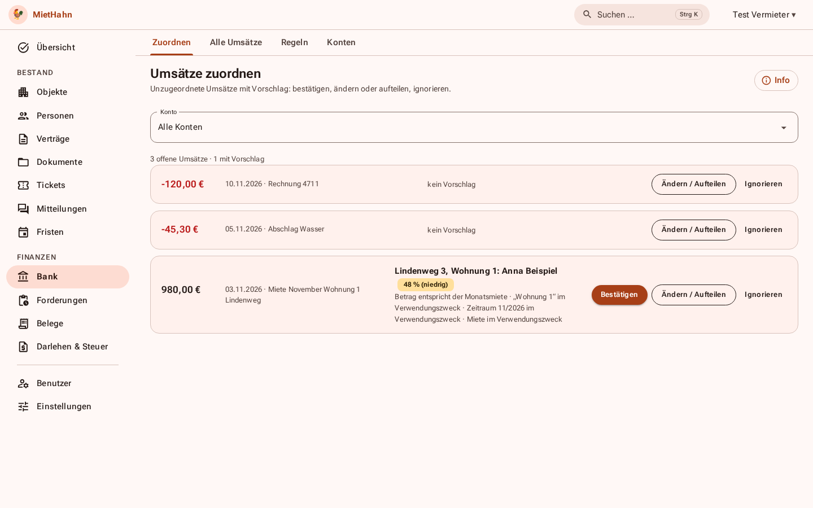
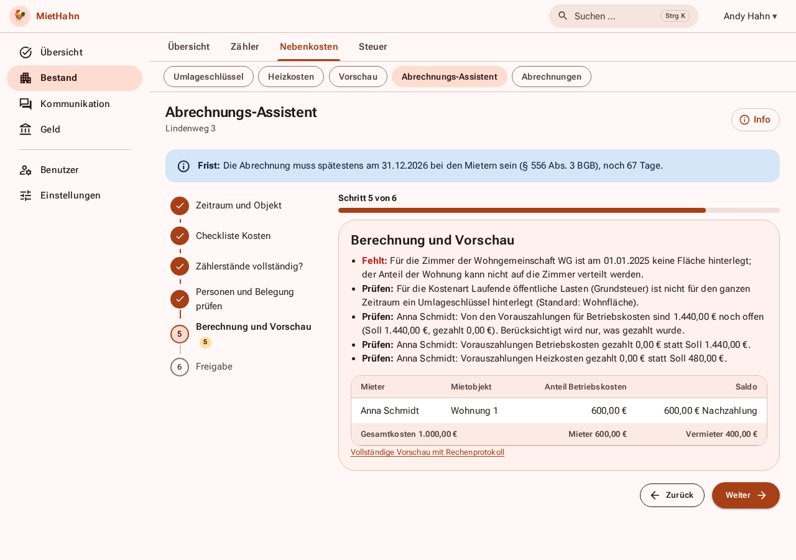
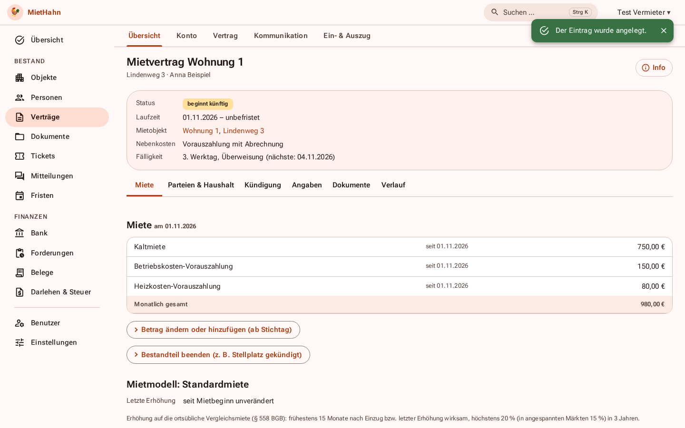

Was MietHahn kann
Bestand und Verträge
Objekte, Wohnungen, WG-Zimmer, Verträge mit Standard-, Staffel- oder Indexmiete, Mietvertrag als PDF, Mieterhöhung (§ 557 bis 559 BGB), digitale Unterschrift, Übergabeprotokoll.
Geld
Mieterkonto mit automatischen Sollstellungen, Bankabgleich per Kontoauszug oder FinTS, Zuordnungsvorschläge mit Begründung, Mahnwesen mit Freigabe, Kautionsführung.
Abrechnung
Betriebskosten nach BetrKV, Heizkosten nach HeizkostenV mit CO₂-Kostenaufteilung, geführter Assistent mit Fristwarnung und Plausibilitätsprüfung.
Steuer
Anlage V je Objekt und Eigentümer, Abschreibung, Darlehen, Erhaltungsaufwand, DATEV-Export.
Mieterportal
Dokumente, Nachrichten, Schadensmeldungen mit Foto, Zählerstände melden, Verbrauch, Mieterkonto. Benachrichtigungen auf dem Handy.
Betrieb
Zwei-Faktor-Anmeldung, Änderungsprotokoll, nächtliche verschlüsselte Datensicherung, Vollexport, Handy-Oberfläche.
Warum selbst betreiben?
Ihre Daten, Ihr Server
Mieterdaten, Verträge und Kontoumsätze bleiben bei Ihnen. Keine fremde Cloud, kein Anbieter, der Preise oder Bedingungen ändert.
Kein Abo, kein Lock-in
Alle Funktionen sind enthalten. Der Vollexport (JSON, CSV, Dateien) steht jederzeit bereit.
Nachprüfbar
Der Quellcode ist offen (AGPL-3.0). Die Rechenwerte tragen eine Quelle und einen Prüfvermerk.
Demo
Eine öffentliche Demo mit Beispieldaten ist in Vorbereitung. Sie wird täglich zurückgesetzt, enthält keine echten Daten und verschickt keine E-Mails. Bis dahin zeigen die Bilder und der Probelauf auf dem eigenen Rechner den Funktionsumfang.
Im Vergleich
| MietHahn | Cloud-Dienste (z. B. immocloud, vermietet.de) | Tabellenkalkulation | |
|---|---|---|---|
| Wohin gehen die Daten? | auf Ihren Server | zum Anbieter | auf Ihren Rechner |
| Kosten | kostenlos (AGPL), Server nach Wahl | Abo, oft nach Wohnungszahl | kostenlos |
| Abrechnung, Mahnung, Mieterportal | enthalten | enthalten, teils gegen Aufpreis | von Hand |
| Ausstieg | Vollexport jederzeit | je nach Anbieter | – |
| Einrichtung | Server mit Docker nötig | Konto anlegen | – |
| Support | Community, kein Telefon | je nach Tarif Telefon/Chat | – |
Die Angaben zu anderen Diensten beruhen auf öffentlichen Auskünften und können sich ändern.
Installation
Voraussetzung: ein Server mit Docker (ab 2 GB RAM) und eine Domain.
git clone https://github.com/TheR00st3r/MietHahn.git && cd MietHahn ./deploy/install.sh --lokal # Probelauf auf https://localhost ./deploy/install.sh # echte Installation mit Domain und Let's Encrypt
- Server mit Docker und eine Domain bereitstellen.
- Die zwei Befehle oben ausführen; der Probelauf (
--lokal) braucht keine Domain. - Im Browser den Administrator anlegen, die Zwei-Faktor-Anmeldung einrichten und dem Einrichtungsassistenten folgen.
Der erste Aufruf führt durch die Einrichtung. Ausführlich: Betrieb und Installation, Anwenderhandbuch.
Ehrlich gesagt
- MietHahn ist keine Rechts- und keine Steuerberatung. Vorlagen und Rechenwerte sind Arbeitshilfen; bitte vor dem Einsatz prüfen.
- Der FinTS-Abruf ist noch nicht mit echten Bankkonten abgenommen; der Import von Kontoauszügen funktioniert unabhängig davon.
- Es gibt keine native App (nur die installierbare Web-App) und keine direkte ELSTER-Übermittlung.
- Betrieb, Updates und Datensicherung liegen bei Ihnen.
Unterstützen
MietHahn ist ein Nebenprojekt und bleibt frei nutzbar. Wer es unterstützen möchte, findet die Wege in der Förderung: Spenden, Finanzierung einzelner Funktionen und bezahlte Einrichtung.
Weitere Ansichten

